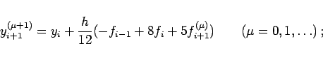

Inhalt Index DeskTop Bronstein

 Numerische Mathematik Integration gewöhnlicher Differentialgleichungen Anfangswertaufgaben
Numerische Mathematik Integration gewöhnlicher Differentialgleichungen Anfangswertaufgaben


In der Praxis sind implizite Mehrschrittverfahren gegenüber expliziten vorzuziehen, da sie bei gleicher Genauigkeit wesentlich größere Schrittweiten erlauben. Dafür erfordert aber ein implizites Mehrschrittverfahren zur Berechnung des Näherungswertes yi+k die Lösung einer im allgemeinen nichtlinearen Gleichung. Diese folgt aus (19.101) und ist von der Form:
Die Lösung von (19.105) erfolgt iterativ. Dabei geht man wie folgt vor: Ein Startwert yi+k(0) wird durch ein explizites Mehrschrittverfahren, dem sogenannten Prediktor, bestimmt und anschließend durch die Iterationsvorschrift
| (19.106) |
dem sogenannten Korrektor, der aus dem impliziten Verfahren hervorgeht, verbessert. Spezielle Prediktor-Korrektor-Formeln sind:
| (19.107a) |
|  | (19.107b) |
| (19.108a) |
Die SIMPSON-Formel als Korrektor in (19.108b) ist numerisch instabil und kann z.B. durch
| (19.109) |
ersetzt werden.